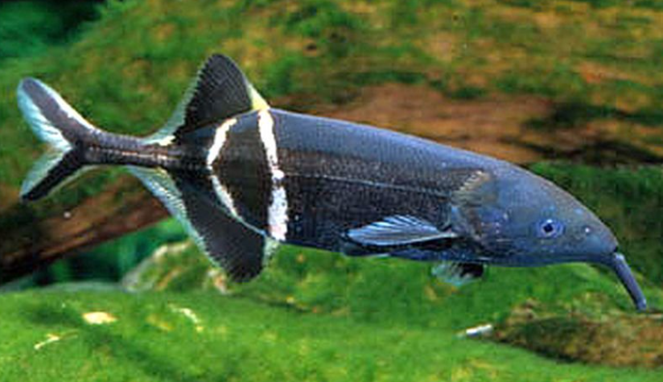

Systématique
- Ordre : Osteoglossiformes
- Famille : Mormyridae
- Genre : Gnathonemus
- Espèce : G. petersii

Gnathonemus petersii est sans doute le représentant le plus connu de la famille des Mormyridae. Il se caractérise par une morphologie unique : un corps allongé et comprimé latéralement de couleur brun foncé à noir, avec deux bandes verticales claires entre les nageoires dorsale et anale. Sa particularité la plus notable est l'extension charnue située sur sa lèvre inférieure (souvent appelée "trompe"), qui est en réalité un organe sensoriel tactile très sensible utilisé pour fouiller le substrat.
C'est un poisson "faiblement électrique". Il possède au niveau du pédoncule caudal un organe capable de générer de faibles décharges électriques, lui servant à s'orienter dans les eaux troubles (électrolocation) et à communiquer avec ses congénères. Il possède l'un des plus gros cerveaux proportionnellement à sa taille chez les vertébrés (coefficient d'encéphalisation élevé).
Il peut atteindre 23 à 25 cm en aquarium (jusqu'à 35 cm dans la nature).
C'est une espèce benthique, principalement nocturne ou crépusculaire. Il passe une grande partie de son temps à sonder le sol avec son appendice mentonnier à la recherche de nourriture.
Son comportement social est complexe. Il est territorial et souvent agressif envers ses congénères s'ils sont maintenus en trop petit nombre ou dans un volume restreint. Une maintenance en groupe nécessite un volume très important (plusieurs centaines de litres) et un groupe d'au moins 5 à 6 individus pour disperser l'agressivité. En revanche, il est généralement pacifique avec les autres espèces de taille suffisante.
Mode : ovipare.
La reproduction est extrêmement rare en captivité et non maîtrisée de manière standardisée par les amateurs. Dans la nature, elle serait saisonnière et liée aux crues et à la baisse de la conductivité de l'eau.
Des études en laboratoire montrent que les mâles courtisent les femelles par des modulations spécifiques de leurs signaux électriques.
Dimorphisme sexuel : Difficile à observer à l'œil nu. Le bord de la nageoire anale serait convexe chez le mâle mature, et droit chez la femelle. La distinction se fait surtout par l'analyse des fréquences de décharge électrique (EOD).
Espérance de vie : Longue, environ 5 à 10 ans, voire plus dans des conditions optimales.
Il fréquente les rivières à courant lent, les mares et les zones inondées d'Afrique de l'Ouest et Centrale. Ces eaux sont souvent sombres, chargées de sédiments ou de tanins, et encombrées de racines et de végétation.
Répartition

Origine naturelle :
- Afrique de l'Ouest et Centrale.
- Bassins des fleuves Niger, Ogun et Congo.
- Présent au Nigeria, Cameroun, RDC, etc.
Paramètres de maintenance
Température : 22 à 28 °C (optimum 24-27 °C).
pH : 6,0 à 7,5 (légèrement acide à neutre).
GH : 5 à 15 °dGH (eau douce à moyennement dure).
Courant : Modéré. Filtration efficace requise mais sans remous excessifs.
Volume conseillé : Minimum 200 à 300 L pour un individu seul (avec d'autres espèces). Pour un groupe, un bac de 600 L ou plus est nécessaire. Impératif : sol en sable fin non coupant pour protéger sa "trompe".
Régime alimentaire
Régime : carnivore benthophage (insectivore).
Dans la nature, il consomme des vers et des larves d'insectes enfouis dans le sédiment.
En aquarium, c'est un mangeur lent qui supporte mal la concurrence alimentaire. Il nécessite impérativement du vivant ou du congelé : vers de vase (chironomes), tubifex, artémias, daphnies. Il accepte rarement les granulés secs, ou alors après une longue acclimatation.